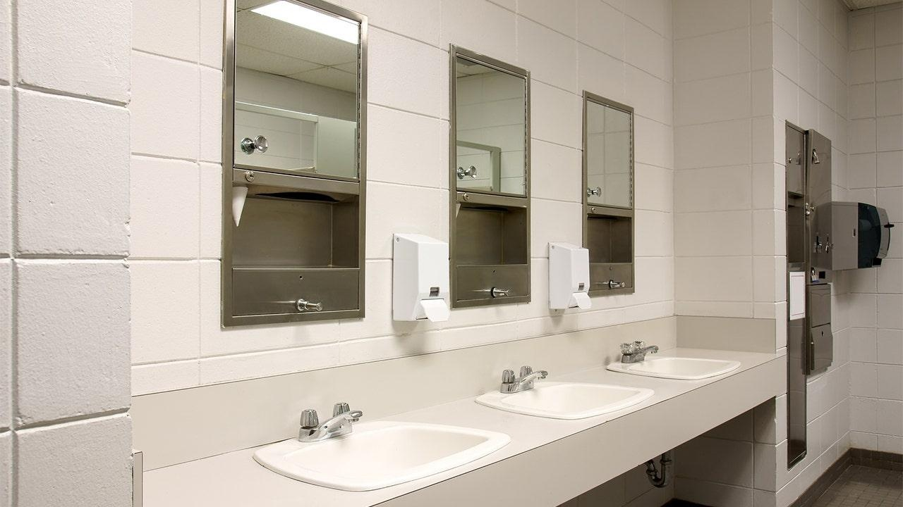

North Carolina school ditches bathroom mirrors to prevent students from recording TikTok videos during classA North Carolina middle school reportedly has decided to remove its bathroom mirrors, noting an uptick in students missing valuable class time to record TikTok videos in the lavatories. "Students were going to the bathroom for long periods of time and making TikTok," Alamance-Burlington School System spokesperson Les Atkins told WFMY, explaining that Southern Alamance Middle School in Graham, North Carolina, resorted to removing bathroom mirrors to eliminate the distraction. The school system said that on average, students use the restroom between three to four times a day, but that frequency has steadily increased to between seven, eight and nine times a day. Since removing the mirrors, Atkins explained, the school has seen, "not as many visits to the bathroom, not staying as long, and students are held accountable, and when there’s accountability, you see a great difference." Atkins explained the school system is trying to educate students on "digital citizenship." "We’re trying to educate students. Like we all have cell phones now. We have to learn to use them. We have to learn when to put them down," he told WFMY. The school is also implementing Smart Pass, a digital hall pass system which officials say allows students to check in and out of class. It's intended to enable staff to better track where students are at all times for safety and accountability reasons, according to school leadership. "We strive to limit distractions so students can focus on learning," Southern Alamance Middle School said in a letter to parents, according to WTVD. "Though this is an adjustment, we believe these changes will foster a better learning environment by minimizing disruptions." According to WXII, school officials said the digital hall pass system comes at no extra cost since it’s part of existing software the school and district already had at their disposal. Tech experts have long sounded the alarm about how TikTok could be indoctrinating America’s youth, warning that Gen Z in particular "is being actively manipulated" by Chinese propaganda and, in growing addicted to the platform’s mindless scrolling, is internalizing information they believe to be true. Montana became the first state in the U.S. to ban TikTok outright, but a judge temporarily prevented the measure from taking effect at the start of the year, citing constitutionality concerns. Florida recently implemented a law limiting cell phone use during instructional time, sparking a debate about tech addiction, as well as helicopter parenting. One Orlando-area middle school teacher who went viral for parody TikTok videos of parents upset about children having their cell phones confiscated under the new law, told Fox News in November it was refreshing to see kids "actually talking to each other." |
 |